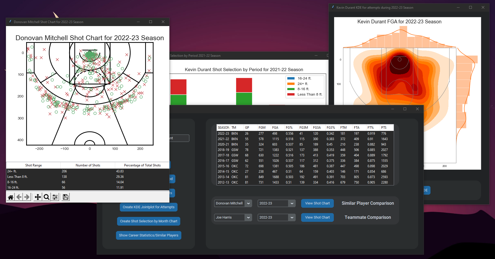
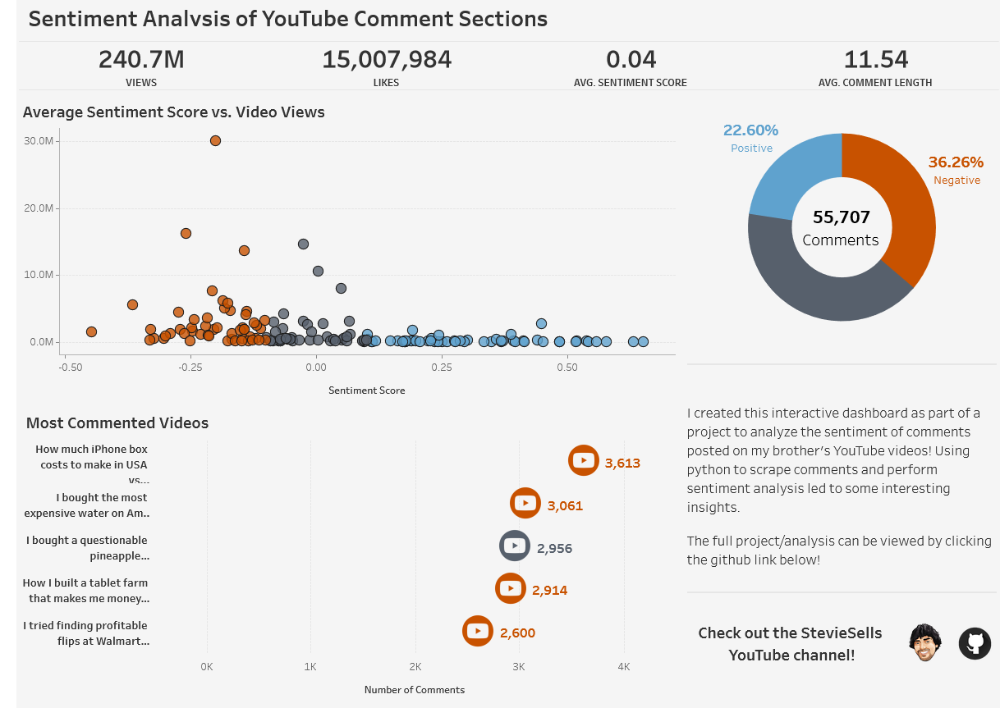
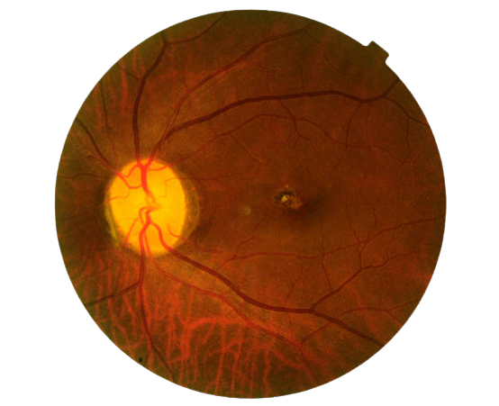

Tkinter GUI for visualizing player shot data for any season post-2015
Quickly create Heatmaps, Shot Charts, Bar Charts, and more for NBA players
Compare to similar players found through KMeans clustering and teammates


A deep dive into the YouTube comments for a popular channel. In this project, I used python to gather/explore the data and investigated the relationship between sentiment and other video metrics.
I extracted, cleaned, and analyzed the Zillow listing data for 4 major cities in Minnesota with the goal of answering questions such as:
- Which listing features have the strongest correlations with price?
- How many listings in each city have decreased from the original asking price?

I used python to explore responses to Kaggle's annual survey of data professionals and predicted salaries with a Random Forest, KNN, SVR, and a VotingRegressor

I used python to explore responses to Kaggle's annual survey of data professionals and predicted salaries with a Random Forest, KNN, SVR, and a VotingRegressor

I used python to explore responses to Kaggle's annual survey of data professionals and predicted salaries with a Random Forest, KNN, SVR, and a VotingRegressor

I used the TensorFlow framework and 2 popular pre-trained neural networks (EfficientNetB0 and VGG16) to detect glaucoma in fundus images. This project features:
- Image Augmentation
- Model Regularization
- Model Evaluation